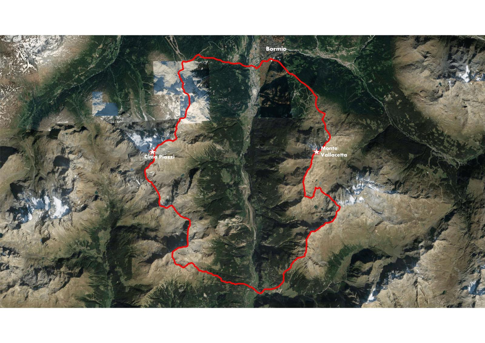

About the project
On this page we are going to explain what is susceptibility mapping for landslides and why assesing exposure to it is so important
Problem of landslides
Landslides are defined as the movement of a mass of rock, debris, or earth down a slope under the direct influence of gravity. They can be classified according to different criteria, such as movement type (fall, topple, slide, spread, flow), type of material involved (rock, debris, earth), speed of movement, water content, clay properties, and others. The above shows how diverse this phenomenon can be and how vast of a topic it is. Landslides have multiple causes, such as rainfall, snowmelt, changes in water level, changes by human activities, earthquakes, stream erosion, or changes in the groundwater. The main enabling factor is always the gravity influencing a slope, thus landslides are mainly a problem in mountainous landscapes. Landslides are among the most damaging natural disasters in the world. This catastrophic event can cause human injury, loss of life, and economic devastation. That's why being able to identify regions exposed to such disasters is so important.
Susceptibility mapping
Susceptibility maps present the risk of a landslide event in a defined area, based on the area location and other local environmental variables. The development of such maps is very important to identify areas prone to landslides, and then to manage such lands with special attention. Computing such maps can be a grat tool for early warning systems. Finally, landslide susceptibility mapping helps take important risk management-related decisions in regional and spatial planning. Many information layers about the area are needed in order to develop such maps. A perfect tool to manage, analyze and present the data in GIS technology. Specialized environmental data together with advanced classification algorithms allow us to create an accurate landslide susceptibility map. By combining the information contained in the separate environmental factors layers we get a wider insight into the environmental situation in each point of the analyzed area in an attribute table. Using that table with reference data we are able to train a classification model to identify areas most prone to landslides. GIS is a powerful tool to achieve these results as it also gives us the possibility to graphically present the results of such analysis. In our study, we used the following environmental factors: the slope, the slope's aspect, the land use and land cover, the distance to roads, geological faults and rivers, the digital terrain model, from which we also derived the plan and the profile curvature, and the normalized difference vegetation index (ndvi). Our reference data was a landslide inventory, and the classification algorithm chosen was the machine learning model of Random Forest.
Exposure assessment
After assessing the hazard zones it is useful to perform an exposure assessment, which consists of estimating the number of people, buildings, or other type of assets present in the hazard-prone areas. This kind of analysis can be performed by overlaying the computed landslide susceptibility map with a spatial density layer of the analized element. In our analysis we focused on the exposure assessment of population and buildings.
Studied region
Lombardy - south of town Bormio
The region which was assessed includes the valley in which the municipality of Valdisotto (part of the Mountain Community of Alta Valtellina) in the province of Sondrio is located. Adda river flows through the valley. The region covers also the peaks of Monte Vallecetta (3148 m) and Cima Piazzi (3439 m). The area is known for its skiing resorts and other touristic attractions. The municipality of Valdisotto is also infamously known for the disastrous events during the flooding of Valtellina in 1987. One of the most dramatic events in that period was a landslide that destroyedd the whole town of Stant'Antonio Morignone and took 35 lives of the inhabitants.
Aim of the project
Develop the landslide susceptibility map for the region. Compute the exposure assessment. Create a website with the result of the analysis.